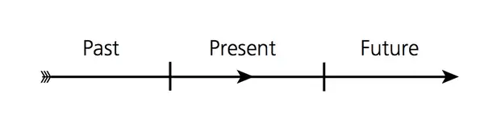
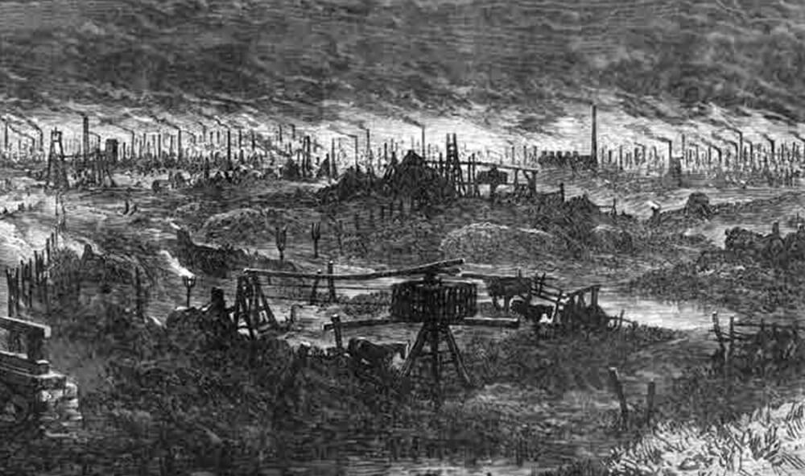
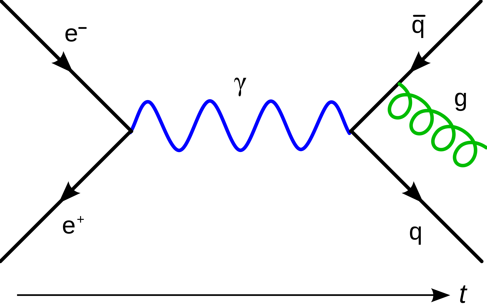
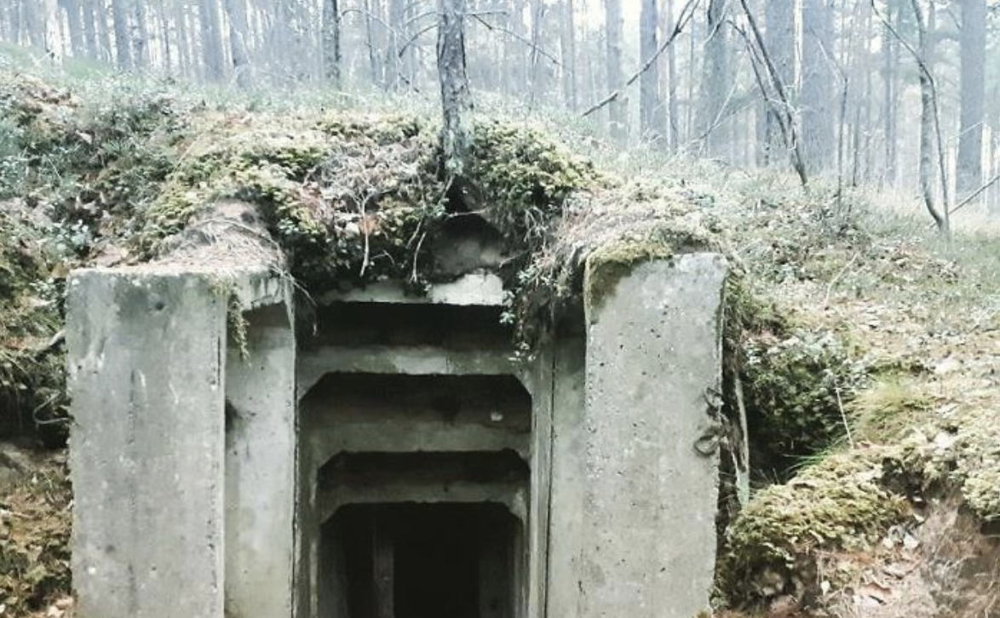

An account of millenial claustrophobia¶
The starting point is dystopic claustrophobia. The world is simply everything that is, but we are only able to glimpse tiny slices of it, from a particular angle.
Technology super-powers. But we cannot predict the consequences reliably. And we get overwhelmed by seeming chaos beyond our control. And we can’t control hardly anything.
Trying to control everything is no way out.
Dystopic claustraphobia is nothing new. The goal is not to revolutionise it. To follow a well trodden, but still dangerous path. But to live in a way that escapes or evades the closing in.
Time and modernity¶
The modern world is dominated by the linear conception of time. This is the conceptual trap we humans fell into 350 years ago. The hope of progress entices us (again and again) to endlessly and meaninglessly construct and expand the technological world around us.
How did it happen? In the bronze age, impoverished people following monotheistic religions had the idea of salvation: a process directed into the future. The spring wound mechanical clocks used in fourteenth century were a prelude to the technological advances of modernity. Newton established time as a quantifiable arrow.
The wonder of burning coal.¶
By November 1840 the needs of the terrifying, smoke belching railway had synchonised time across the whole of England. Today everything is needlessly synchronised in a dystopia of unrestrained technology, Internet of corporate interests, attention hijack, disinformation, misinformation and trivia.
And technology paid back in dividends. The magic of compound interest.
Causal mechanisms¶
Electronics convert signals into high frequency oscillating currents via suitably shaped conductors. Electricity permits the transmission and reception of these signals via radio waves over very long distances and into people’s homes. The signals have been stored magnetically then processed into digital information by a series of technological transformations. Modern network and computing systems allow them to be reproduced in an appropraite medium on demand.
This unweildy machine has become the neurotic cage of billions of overwrought souls. Alienated from more natural surroundings the instincts to fight, fly away or freeze in terror flap like bloody wings against the metal walls of the underground containers constructed to house us. And we flap our bloody wings against each other.
A vision of hell¶
The mist was cold and the observer was dis-embodied, like a slow moving camera on a serious documentary. The place was somewhere very far north, where the trees were evergreen and the grass long and matted with weeds. Here it was thousands of miles from civilisation, in some otherworld outside of time, where the normal rules of physics did not apply, and nothing was what it seemed.
In a small clearing was a concrete rectangle raised not half a foot from the ground. Grubby, as if it has been there for 25 years or more. A relic of cold war defense, or offense, or secrecy. Across its top is a manhole cover, large enough and substantial enough to protect access to significant underground space. And beneath that the most horrifying sound. Somehow both mechanical and organic. Like a baseline hum of distress - the sound was both a helicopter’s mechanical whir, too close for comfort, and a thousand shrieking primates, or large birds - drenched in a metallic reverb. Muffled by the thick steel cover.
And the camera cut to reveal the horror below - the full spectrum wail no longer muffled but deafening. Large powerful wings flapping terribly against each other in the pitch black space below.
Each pair of large feathered, magnificent wings tethered firmly to a cyclindrical spine of pure protein. No head or neck or feet or breast. Just a perfectly functional, factory produced stub to ground these muscle-bound wings. Each stubby base harnessed by wires and packed densely into the cavournous space below where they furiously beat. Halls and halls of underground wings flapping into eternity. I could not see the floor. They were fed, I assume somehow. Thick liquid dripping. No eyes no brains no ears just nerves and muscle and energy endlessly beating.
And they are just there. Any purpose to these thousands of benighted beings entirely inscrutable. Not so much hard to divine the meaning of these things, so much as the definition of meaninglessness. Technology, power, pain, indifference scale and nothing else beside. No redemption, no potential. No potential for redemption. Just time stretching out and the absence of change. Meaningless Whys with their magnificent bloodied wings, flapping against each other in the dark - a thousand miles from anything.
Narcissisus Suzerain¶
Commentary on the tendancy in modern society with modern communication mechanisms to allow pathological narcissists to predominate.